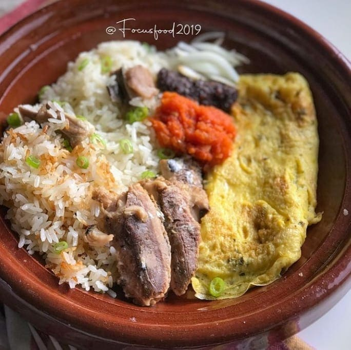

Oil Rice

Sweet Oiled Rice (Angwa mo)
The easiest and quickest recipe for preparing oil rice "angwamu". One of my favorite lunch meals, its prepared with few ingredients and tastes great.
Ingredients Needed
- Rice
- Cooking Oil "Oil of your choice
- Onions
- Eggs
- Tomatoes
- Pepper
- Salt to taste
- Sardine
- Water
Steps
- Heat 4 tablespoons of oil, chop onion and saute in oil and stir, add a cup of rice and stir continuously for about a minute and add water.
- Add salt,stir and cover it to cook for 5-10 minutes.
- Wash the vegetables(tomatoes, pepper and onion), grind in an earthenware bowl and add salt to taste. Add Sardine (if available)
- Chop tomatoes and onion, crack 2 eggs and add the chopped tomatoes,onion,add salt and beat the eggs.
- Heat a tablespoon of cooking oil and fry the eggs,make sure to turn eggs when it turns brown. Check to see if the rice is well cooked.